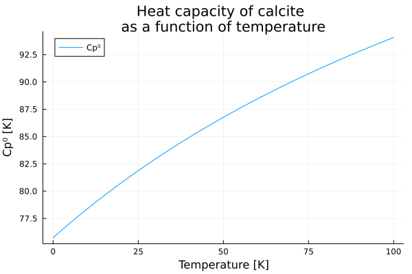
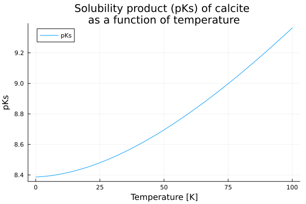

Getting started
This quickstart shows a few common, minimal examples to get you productive with ChemistryLab. It demonstrates creating species, building reactions and generating a stoichiometric matrix.
Simplified example
Let us start with a minimal example in which we compute the thermodynamic properties of a reaction. As a first illustration, we consider the equilibrium of calcite in water. This equilibrium can be written as:
\[CaCO_3 \rightleftharpoons Ca^{2+} + {CO_3}^{2-}\]
It is possible to calculate the thermodynamic properties of the reaction, in particular the solubility constant of the reaction ($\ln K$) which is related to the Gibbs free energy of the reaction ($\Delta_r G^°$). This solubility constant is a function of temperature and the calculation is performed at a reference temperature of 298 K and at a pressure of 1 Atm using the following equation:
\[\Delta_r G^° = - RT\ln K\]
where $\Delta_r G^°$ is deduced from the Gibbs energies of formation ($\Delta_f {G_i}^°$) of the other chemical species involved in the reaction:
\[\Delta_r G^° = \sum_i \nu_i \Delta_f {G_i}^°\]
To do this, we can create a list of chemical species, retrieve the thermodynamic properties of these species from one of the databases integrated into ChemistryLab. We can then deduce the chemical species likely to appear in the reaction and calculate the associated stoichiometric matrix.
In this example, the database is cemdata. The .json file is included in ChemistryLab but is a copy of a file which can be found in ThermoHub.
using ChemistryLab
filebasename = "cemdata18-thermofun.json"
df_elements, df_substances, df_reactions = read_thermofun_database("../../data/" * filebasename)The chemical species likely to appear during calcite equilibrium in water are obtained in the following way:
df_calcite = get_compatible_species(df_substances, split("Cal H2O@ CO2");
aggregate_states=[AS_AQUEOUS], exclude_species=split("H2@ O2@ CH4@"), union=true)
dict_species_calcite = build_species_from_database(df_calcite)Dict{String, Species} with 12 entries:
"H+" => H+ {H+} [H+ ◆ H⁺]
"OH-" => OH- {OH-} [OH- ◆ OH⁻]
"CO2" => CO2 {CO2 g} [CO2 ◆ CO₂]
"Ca(HCO3)+" => Ca(HCO3)+ {CaHCO3+} [Ca(HCO3)+ ◆ Ca(HCO₃)⁺]
"Cal" => Cal {Calcite} [CaCO3 ◆ CaCO₃]
"CaOH+" => CaOH+ {CaOH+} [Ca(OH)+ ◆ Ca(OH)⁺]
"H2O@" => H2O@ {H2O l} [H2O@ ◆ H₂O@]
"Ca+2" => Ca+2 {Ca+2} [Ca+2 ◆ Ca²⁺]
"CO2@" => CO2@ {CO2 aq} [CO2@ ◆ CO₂@]
"HCO3-" => HCO3- {HCO3-} [HCO3- ◆ HCO₃⁻]
"CO3-2" => CO3-2 {CO3-2} [CO3-2 ◆ CO₃²⁻]
"Ca(CO3)@" => Ca(CO3)@ {CaCO3 aq} [CaCO3@ ◆ CaCO₃@]During species creation, ChemistryLab calculates the molar mass of the species. It also constructs thermodynamic functions (heat capacity, entropy, enthalpy, and Gibbs free energy of formation) as a function of temperature. The evolution of thermodynamic properties as a function of temperature, such as heat capacity, can thus be easily plotted.
dict_species_calcite["Cal"]Species{Int64}
name: Calcite
symbol: Cal
formula: CaCO3 ◆ CaCO₃
atoms: Ca => 1, C => 1, O => 3
charge: 0
aggregate_state: AS_CRYSTAL
class: SC_COMPONENT
properties: M = 0.10008599996541243 kg mol⁻¹
Tref = 298.15 K
Pref = 100000.0 m⁻¹ kg s⁻²
Cp⁰ = 104.5163192749 + 0.02192415855825T + -2.59408e6 / (T^2) [m² kg s⁻² K⁻¹ mol⁻¹] ◆ T=298.15 K
ΔₐH⁰ = -1.2482415842895252e6 + 104.5163192749T + 2.59408e6 / T + 0.010962079279125(T^2) [m² kg s⁻² mol⁻¹] ◆ T=298.15 K
S⁰ = -523.9438829693111 + 0.02192415855825T + 104.5163192749log(T) + 1.29704e6 / (T^2) [m² kg s⁻² K⁻¹ mol⁻¹] ◆ T=298.15 K
ΔₐG⁰ = -1.1423813547027335e6 + 628.460202244211T + 1.29704e6 / T - 0.010962079279125(T^2) - 104.5163192749T*log(T) [m² kg s⁻² mol⁻¹] ◆ T=298.15 K
V⁰ = 3.6933999061584004e-5 [m³]
Cp⁰_Tref = 81.87109375 m² kg s⁻² K⁻¹ mol⁻¹
ΔₐH⁰_Tref = -1.207405e6 m² kg s⁻² mol⁻¹
S⁰_Tref = 92.675598144531 m² kg s⁻² K⁻¹ mol⁻¹
ΔₐG⁰_Tref = -1.129176e6 m² kg s⁻² mol⁻¹
V⁰_Tref = 3.6933999061584004e-5 m³using Plots
p1 = plot(xlabel="Temperature [K]", ylabel="Cp⁰ [K]", title="Heat capacity of calcite \nas a function of temperature")
plot!(p1, θ -> dict_species_calcite["Cal"].Cp⁰(T = 273.15+θ), 0:0.1:100, label="Cp⁰")
Obtaining stoichiometric matrices requires the choice of a species-independent basis.
primaries = [dict_species_calcite[s] for s in split("H2O@ H+ CO3-2 Ca+2")]
SM = StoichMatrix(values(dict_species_calcite), primaries)These stoichiometric matrices thus allow us to write the chemical reactions at work.
list_reactions = reactions(SM)
dict_reactions_calcite = Dict(r.symbol => r for r in list_reactions)Dict{String, Reaction{Species{Int64}, Int64, Species{Int64}, Int64, Int64}} with 8 entries:
"Ca(CO3)@" => CO₃²⁻ + Ca²⁺ = CaCO₃@
"Cal" => CO₃²⁻ + Ca²⁺ = CaCO₃
"OH-" => H₂O@ = OH⁻ + H⁺
"CaOH+" => H₂O@ + Ca²⁺ = Ca(OH)⁺ + H⁺
"CO2@" => 2H⁺ + CO₃²⁻ = CO₂@ + H₂O@
"HCO3-" => H⁺ + CO₃²⁻ = HCO₃⁻
"CO2" => 2H⁺ + CO₃²⁻ = CO₂ + H₂O@
"Ca(HCO3)+" => H⁺ + CO₃²⁻ + Ca²⁺ = Ca(HCO₃)⁺Again, when constructing the reactions, the thermodynamic properties of the reactions as a function of temperature are deduced. It is thus possible to see, for example, the expression for the solubility product of calcite for the reaction under study and to plot its evolution.
dict_reactions_calcite["Cal"].logK⁰ThermoFunction:
Expression: (-1.29704e6 + 125345.63212888106T - 2666.9195440882527(T^2) + 424.77184295654104(T^2)*log(T) + 0.010962079279125T*(T^2)) / (19.144757680815896(T^2)) [m² kg s⁻² mol⁻¹]
References: T=298.15 K
Variables: Tp2 = plot(xlabel="Temperature [K]", ylabel="pKs", title="Solubility product (pKs) of calcite \nas a function of temperature")
plot!(p2, θ -> dict_reactions_calcite["Cal"].logK⁰(T = 273.15+θ), 0:0.1:100, label="pKs")
Notes and next steps
- The
Formula,Species,ReactionandStoichMatrixAPIs are intentionally small and composable — explore thedocs/src/pages for detailed examples. - For cement-specific workflows, use
CemSpeciesand thedatabasesutilities to convert between oxide- and atom-based representations.
Now try the quickstart examples interactively in the REPL and then follow the next pages of the tutorial for deeper coverage.